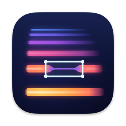

Spledio
See your audio. Fix just the part that's wrong.
What it does
See the sound
Your recording becomes a picture: time runs left to right, pitch bottom to top, and brightness shows loudness. A whistle, a hum or a ringing tone stands out as a bright line.
Draw around it
Box in just that sound. Click − or + to change its level 1 dB at a time, or silence it. Everything else stays exactly as it was, and no time is cut.
Change your mind
Every part you change stays outlined with its level. Click it to change it again, or remove the change and get the original audio back exactly.
Private by design
No account, no uploads, no internet connection. Your audio never leaves your Mac.
Install
- Click Download for Mac to get
Spledio-macOS-arm64.dmg. - Open the downloaded file and drag Spledio into Applications.
- Open Spledio from Applications. It is signed and notarized by Apple, so it opens like any other app.
Only download Spledio from this page or from the
official GitHub releases. Each release lists the file's SHA-256 checksum,
so you can check your download with shasum -a 256 Spledio-macOS-arm64.dmg in Terminal.
Windows and Linux: no installer yet. You can run it from the source code; see the README. These platforms have not been tested yet.
Your first edit
- Drag an audio file onto the window (WAV, AIFF, FLAC, OGG or MP3). Your original file is never changed.
- Draw a box around the sound you want to change.
- In the small bar next to the box, click − to make it quieter or + to make it louder. You can also drag the slider or click Silence.
- Press Space to listen. Changes are heard while it plays.
- File → Export Audio… (⌘E) saves the result as WAV or FLAC.
Handy keys
| ↓ ↑ | Selected part 1 dB quieter / louder (Shift for 6 dB) |
| 0 | Silence the selected part |
| Delete | Remove the change from a part you clicked |
| S / D | Hear only the selection / hear what an edit removes |
| ⌘Z | Undo (up to 200 steps) |
| F1 | Built-in step-by-step tutorials |
Everything else is in the user manual.
License and source code
Spledio is free software under the GNU General Public License, version 3 only (GPL-3.0-only). You can use it for anything, study and change the code, and share it, including your changes, under the same license. It comes with no warranty. The full source code for every release is on GitHub, with the license text and the third-party notices (Qt/PySide6 under LGPL-3.0, NumPy, SciPy, libsndfile, PortAudio and others).
Help
Found a bug or have a question? Open an issue on GitHub Issues. Please include your Spledio version (Help → About), your macOS version and the steps that cause the problem.